2014 Ferrari 458 Speciale
Article by Car and Driver 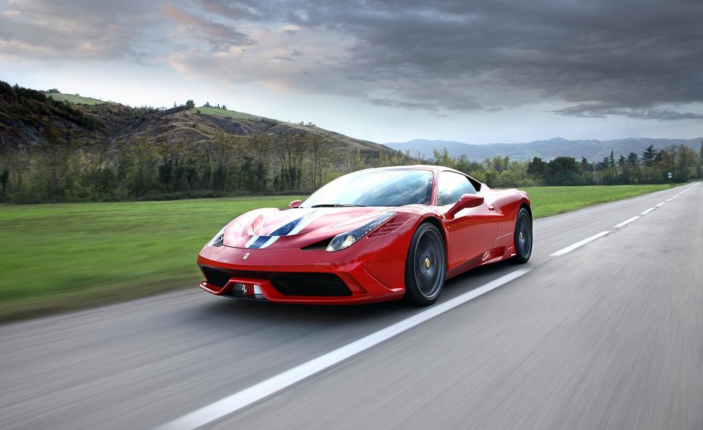The Ferrari 458, originally introduced to the supercar world in 2009, nearly immediately gained recognition as a beautiful car that's just as effective on the track as it is in a showroom or in the midst of an exotic car show. It was praised for its "tameable aggressiveness," which allowed drivers to push the 458 to its limits without having to constantly worry for the sake of their lives. Few complained that it wasn't loud enough or didn't have enough power or didn't handle well enough, and the car leapt to the top of the top-5 best supercars list. It's remained there ever since, even though it is technically an older vehicle. Recently, Ferrari decided to upgrade its iconic mid-level supercar.
Enter the 458 Speciale. The aesthetic differences are minimal; the body shape stays nearly identical, while the front hood gains a set of aerodynamic and cooling improvements. Somehow, Maranello has managed to shave 200 pounds from the original 458's mass, and added another 35 horsepower to the 458's already-monumental numbers (it now pushes 600bhp). Ferrari have even tampered with the traction control system, allowing for higher-speed drifting within safe limits. This upgrade to the icon, therefore, successfully allows the 458 to redeem and prove its place in the top-5 best cars list alongside its more modern competitors.
My recommendation: if you have the cash and can justify the additional cost over the original 458, shell it out on this beauty - especially if you'll be spending any time on the track. The additional noise, handling capabilities, and prestige are well worth the price bump.
Price: $298,000
2016 Ferrari 488 GTB
Article by MotorTrend 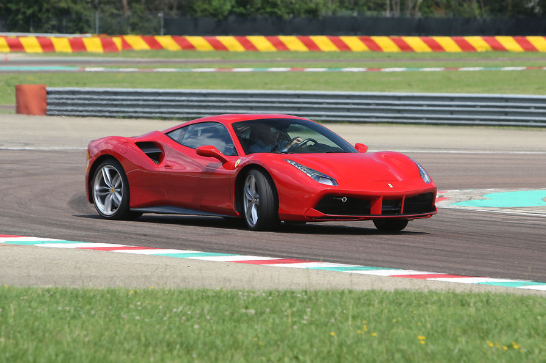"If it ain't broke, don't fix it."
Ferrari really doesn't like taking advice like that. In the eyes of many, the supercar masterminds over in the Ferrari factories had already produced one of the best cars ever made, the 458, and there wasn't a huge need to release a new one because the older icon was still thrashing its modern day competitors. However, a successor to the 458 was announced in 2015: the Ferrari 488 GTB.
Ferrari, by tradition, has stuck to naturally-aspirated engines in all its cars besides the California (the entry-level model). The 488 GTB, woefully, breaks this trend. It is powered by a relatively small 3.9-liter twin-turbo V8, instead of the previous 4.5-liter naturally-aspirated V8 found in the 458. Horsepower figures jump from the mid-500s to around 660hp for the 488, with an accompanying torque figure of 560 lb-ft. The figures are impressive: the 488 easily cracks the 3-second 0-60 mark, and bests the 458's Nurburgring time by several seconds.
My recommendation: though the stats behind this car are impressive, I'm not a fan. It's beautiful, there's no doubt, but it just doesn't feel as special as its predecessor, the gorgeous 458. In addition, the twin turbos introduce turbo lag to the driving experience, and drop the redline from a howling 9,000 RPM to a mere 8,250. This car just doesn't have the same presence as the 458: it's faster, sure, but it's also quieter and feels more subdued. Get the 458 Speciale if you're in the market for a new Ferrari.
Price: $242,737
2016 McLaren 570S
Article by Car and Driver 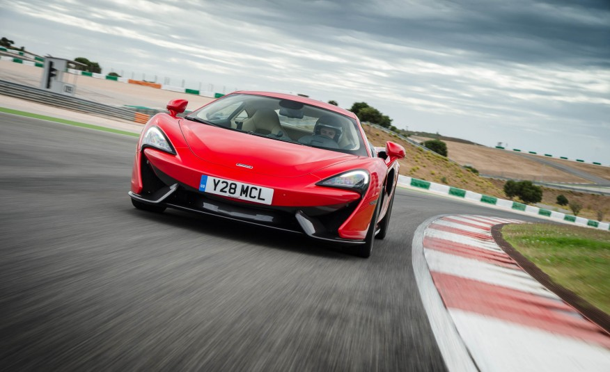A decade ago, it was pretty much impossible to go out and buy a McLaren. The F1 was the only option, and it costs several million dollars. However, McLaren decided to switch gears a little (pun intended) and expanded its reach into the consumer market with the introduction of the relatively affordable, Ferrari-competitor MP4-12C supercar in 2012. Since then, McLaren has released a number of more-affordable high-end sports cars, and the 570S is the most recent addition to this line.
The 570S is a looker. It takes aesthetic and mechanical design cues from its big brothers, the 650S supercar and P1 hypercar. Though not quite as fast as either, the 570S comes in at roughly 2/3 the price of the 650S, making it a much more affordable option and a direct competitor to high-end Porsche supercars. Its race pedigree and twin-turbo V8 allow the car to reach 60mph in around 3.2 seconds, and lags only a few seconds behind the 650S around the Nurburgring.
My recommendation: if you can't afford a 458 or don't want to be associated with Ferrari, and want to have some leftover cash for maintenance fees and track dues without succumbing to the normality of a Porsche, pick up the 570S. It'll outdrive pretty much everything out there under its price tag, but can keep up with cars double the price (cough cough, Bentley).
Price: $184,900
2016 McLaren 675LT
Article by MotorTrend 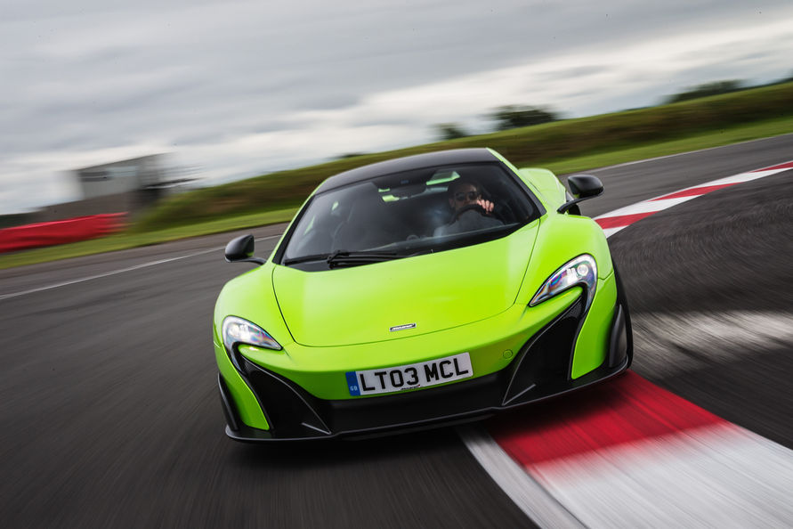Even though McLaren has focused a ton on the lower spectrum of its supercars in recent years (see the 650S and 570S), it still churns out high-end supercars once every two years or so. The 675LT is the most recent iteration of its high-end supercar flagship, and is based on the already-incredible 650S platform.
The "LT" at the end of its name acknowledges the car's Long-Tail heritage, a monicker traditionally allotted to track-oriented McLarens with better aerodynamics and power output than standard McLarens. As one might expect, the car produces an astounding 675bhp, and applies that power to the pavement as efficiently as one could possibly ask for. It'll hit 60mph in about 2.8 seconds - this is Lamborghini territory - and you can expect it to handle even better than the 650S thanks to updated suspension components and a smarter onboard computer.
My recommendation: If the 650S just isn't quite exotic for you, and you have the cash for the 675LT and don't mind waiting 1-2 years for it to arrive, the 675LT is just about the best option for you (though the Aventador promises similar performance in a subjectively better-looking body). Pick it up if you want one of the best-possible track-day experiences available today.
Price: $353,600
2011 Lamborghini Aventador LP700-4
Article by Car and Driver 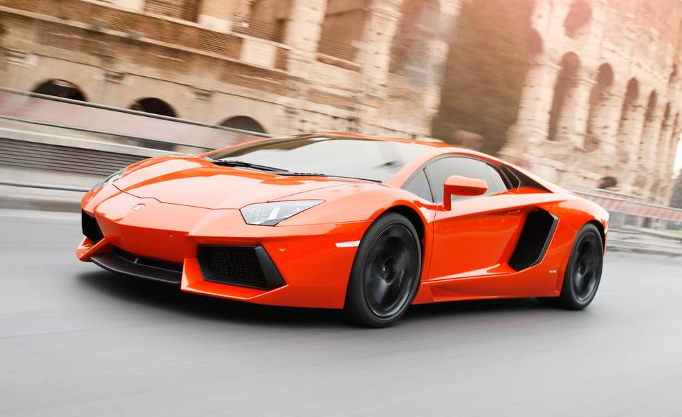Few cars in the world have the ability to terrify and thrill at the same time like the Lamborghini Aventador. When one of these drives up, there's very little question about what it is - it's loud, aggressive, and dead sexy, so it must be a Lambo. It produces nearly 700 horsepower from its howl-capable naturally-aspirated V12, which drives all four wheels to achieve a 0-60 time in the 2.5-2.6 second range. It's horrifyingly fast, and can handle itself much better on the track than one would expect for a big Lamborghini.
Mechanically speaking, this car is incredible. A carbon-fiber tub reduces overall weight, while the single-clutch transmission saves weight and space (though be warned - it feels like a kick to the back of the head during full-throttle upshifts). This poster car has inspired kids and adults alike since its announcement in 2010.
My recommendation: if you can stomach the $400k+ price tag, and don't want the Roadster version, grab the Aventador. Just a warning - you'll create traffic of your own wherever you go because everyone's going to want a picture of this car. Better not be afraid of attention.
Price: $402,995
2017 Ferrari California T Handling Speciale
Article by Car and Driver 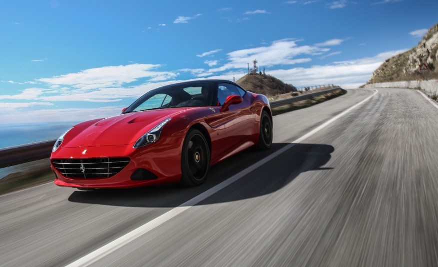Announced in 2016, the Ferrari California T Handling Speciale represents the highest-priced configuration of the company's low-end convertible supercar line. This year's release adds a twin-turbo system to the original naturally-aspirated V8, dropping its 0-60 time from over 4 seconds to just under.
My recommendation: save up for a 458, or just get a 570S instead. The purchase of this car is an admission that you want to own a Ferrari, but can't quite afford the big-brother 458 or 488 GTB. It's not a track-oriented option (convertibles rarely are), even though the name implies decent handling. If this was the only car Ferrari offered, my opinion might be more favorable - but the reality is that buying a "poor man's Ferrari" isn't the greatest idea unless you're absolutely in love with the thing and are prepared to defend your decision.
Price: $202,723
2016 Aston Martin DB9 GT
Article by Car and Driver 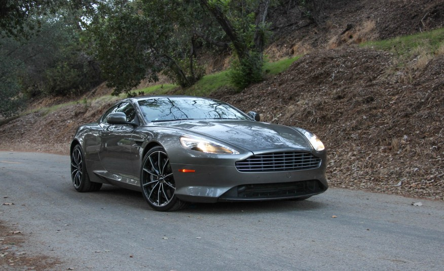My challenge to you: find a better-looking car. I don't think one exists. Aston Martin's designers, in my opinion, are geniuses; their cars generally seem to have near-perfect proportions, and the overall design is just simply stunning. Peoples' heads turn when Astons drive by, and that's not just because their V12 engines are loud (they are, in case you were worried). The DB9 GT is a revamped version of the 2009 Aston Martin DB9, and adds 30 more horsepower for a total of 540 along with updated interior components.
There's one big problem: Aston hasn't touched its single-clutch transmission in several iterations of supercars. It's lurchy, unintelligent, and plain uncomfortable during daily driving. Outside of that, the car is a beast - it'll hit 60 in under 4 seconds, and has a strong enough chassis to handle pretty much any spirited-driving antics you throw its way.
My recommendation: if this won't be your daily driver, and you're just looking for a gorgeous, luxurious supercar for weekend drives to the country club, pick up one of these. It's not track oriented - nobody claims that - but as far as supercar luxury goes, nobody takes better care of you than the DB9 series.
Price: $201,075
2015 Ferrari F12tdf
Article by Car and Driver 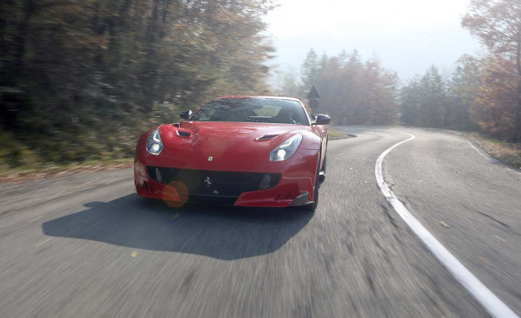In 2014, Ferrari released the F12berlinetta, a replacement for the 599 front-engined GT car. It produces 731 horsepower from its 6.3-liter V12, a number that's high enough to have genuinely scared ex-Top Gear host Jeremy Clarkson in his road test of this car a few years back. The car's unique shape and aerodynamics coupled with its non-traditional front-engine layout to produce a very interesting choice for wealthy car-buyers who didn't want to spend much time on the track but wanted the absolute fastest GT car available at the time.
For some reason, Ferrari then decided to add more power to the mix, in an even more insane iteration of its flagship GT line: the F12tdf. Mechanically, the changes are extensive: the rear wheels now turn several degrees, effectively reducing the car's too-long wheelbase and making it corner better. It also produces 770 horsepower now at a 200-rpm-higher peak, along with 11 lb-ft more torque. It rips from 0-60 in 2.8 (or fewer) seconds, and completes the quarter-mile in 10.8 seconds. A carbon-ceramic brake system is also standard, along with a few aesthetic improvements to the exterior.
My recommendation: I don't see the need for this car to exist, honestly. GT cars aren't meant for the racetrack, and this car still has too much power to effectively utilize on the track. It's fast as heck in a straight line, but you shouldn't really be drag-racing a Ferrari in the first place - you'll lose to modified Evos that cost a tenth the price. If you have the money, urge yourself to settle for the original F12, and use the leftovers for track expenses or fuel costs. Or just get a 458 or equivalent McLaren.
Price: $490,000
2015 Nissan GT-R Nismo
Article by Car and Driver 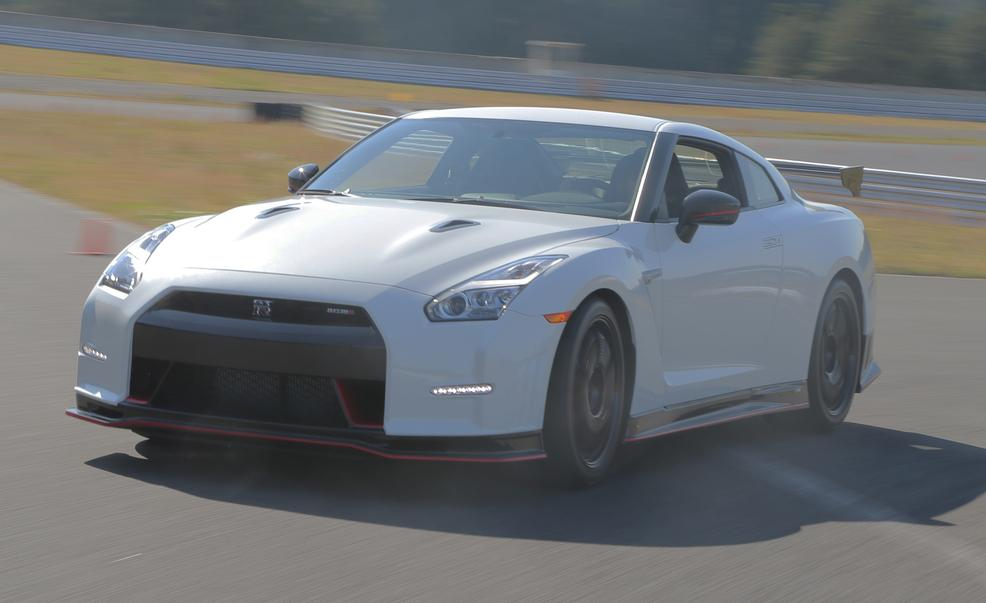This car is affectionately referred to as "Godzilla" by members of the motoring community - and for good reason. It costs around $100k, but produces over 500 horsepower from its turbo-d V6 and applies that power to all four wheels. It breaks 60 in under 3 seconds, and is one of the fastest supercars around the Nurburgring - regardless of price point.
Price: $103,365
2016 Lamborghini Huracan LP580-2
Article by Car and Driver 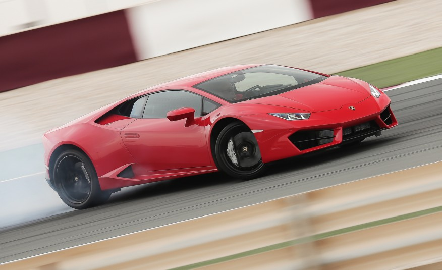Few cars in the world have the ability to terrify and thrill at the same time like the Lamborghini Aventador.
Price: $203,295
2016 Lamborghini Huracan LP610-4 Spyder
Article by Car and Driver 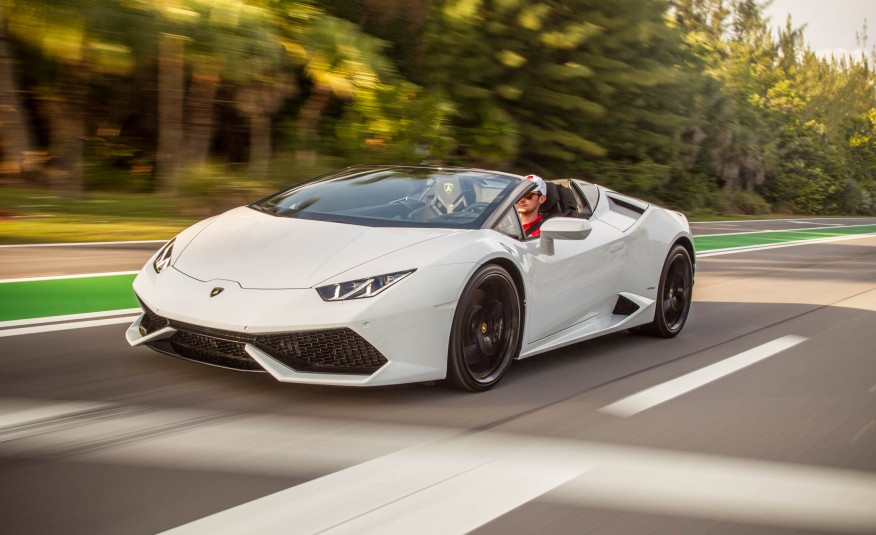Few cars in the world have the ability to terrify and thrill at the same time like the Lamborghini Aventador.
Price: $203,295
2017 Acura NSX
Article by Car and Driver 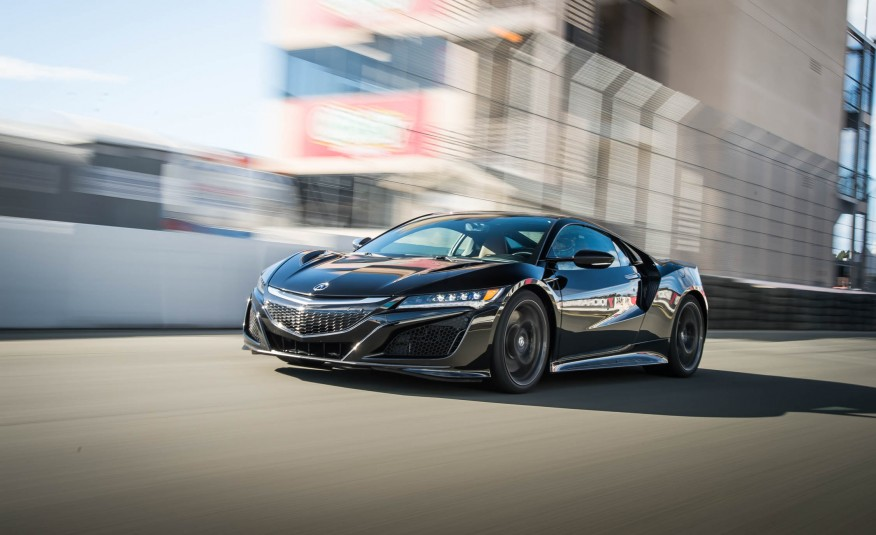Few cars in the world have the ability to terrify and thrill at the same time like the Lamborghini Aventador.
Price: $157,800
2017 Audi R8 V10
Article by MotorTrend 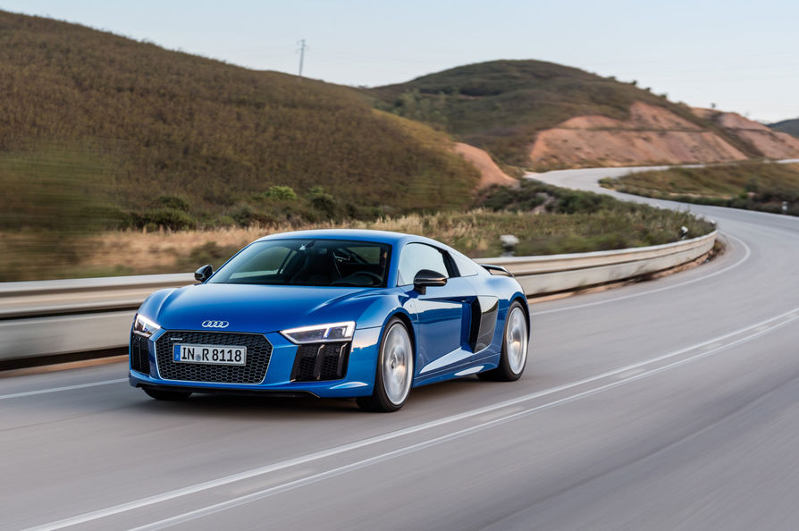Few cars in the world have the ability to terrify and thrill at the same time like the Lamborghini Aventador.
Price: $172,300
2017 Porsche 911 Turbo S
Article by Car and Driver 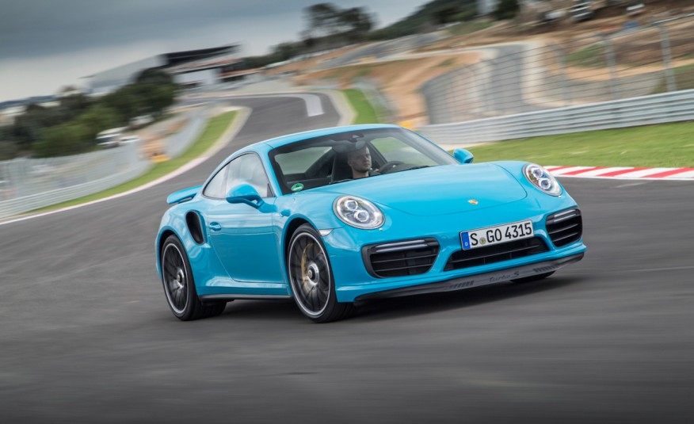Few cars in the world have the ability to terrify and thrill at the same time like the Lamborghini Aventador.
Price: $152,150
2016 Aston Martin V8 Vantage GT
Article by MotorTrend 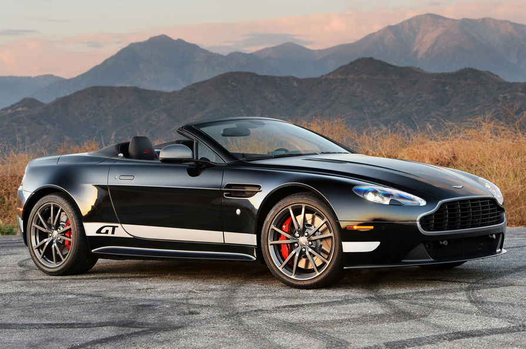Few cars in the world have the ability to terrify and thrill at the same time like the Lamborghini Aventador.
Price: $107,825